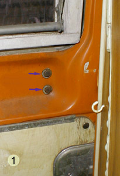
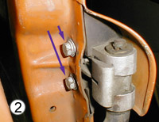
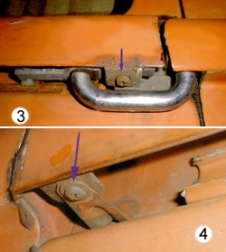
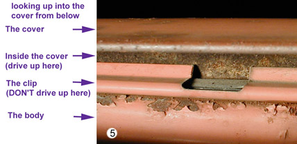

Type 2: Sliding Door Maintenance
Mostly maintainance is cleaning and greasing. There are three "points of motion", two are fairly simple, one a bit complex.
First, the upper and lower rollers do need to be present and do need to be greased. White lithium grease (sold in tubes or spray cans) is ideal. In the spray can it can be poked into places that would otherwise require disassembly. It is made for use on boat trailers so it is water-proof. As for the tracks at the top and bottom of the door: the top track rarely needs more than a wipe and grease. The bottom track needs to be cleaned, needs to be greased, and then needs to be looked at with an eye toward straightness. If there are significant humps or dips in the track, you are gonna have trouble. Why are there dips and humps? Because you need new rockers and a new track! As the rocker rusts off, the track begins to rust itself, and it sags from lack of support. Get the rockers replaced.
The third point is the rear support (RS) and track. As with the upper track, there is rarely anything wrong with the track, it just needs a wipe and grease. That RS is a complex little puppy under great strain, though, and ought to come out and be inspected. You don't need to remove the sliding door to get the RS off! Here's how:
First, get inside the bus and close the slider. There will be two M6 bolts at the rear of the door that attach the support to the door. (Figure 1) If you are lucky, they are covered by black plastic caps. Remove the caps and the bolts. Open the door. Get a milk crate and a couple boards, open the door just enough to get it popped out at the back to the maximum (only and inch or two). Look inside the support and you will see two more bolts inside the rear edge of the door. (Figure 2) Remove them. Support the rear edge of the door on the milk crate and boards, lift it slightly, and pull the RS to the rear. It will come out. It may require some wiggle, but it will come out.
Now you have to get the RS assembly off the track. Slide that assembly to the rear of the bus until you reach the cutout in the track. That gap is where the top of the plastic block lifts up off the track. After the plastic block is off, then wriggle the wheel off the track. Note that if you don't lift the block thru that gap, you will break the block! Also, I usually have no problem tugging the cover out enough to remove the RS without removing the cover. But if it looks like it might kink the cover, or you are just not comfortable, then remove the cover (see procedure below).
Now that you have the RS assembly in your hands and loose of the bus, sit down and take a "70's moment." Sit and grok, in other words. There is a slider block (plastic and usually worn out), a wheel (sometimes in one piece with really nice ball bearings, but usually without and wobbling free), and the U with its support bearings and the two catches, neatly housed in a (usually) broken pot metal casting.
And you wondered why it didn't work right! These RS's used to be common as dirt and you could get them from any junk yard for $5, but they are getting rarer and rarer, especially in decent condition. When you are in a junk yard and see one in decent condition, I advise collecting it! The casting and bearings for the U are NLA, so be careful! The secret is simply to disassemble, clean, grease, and reassemble, keeping track of the little parts and pieces.
Once the RS is ready for reinstallation, pop it onto the track, and back into its cove in the door, then insert the bolts loosely from the outside, rear, and then, entering thru the front doors, to the inside front. At this point, you want to tighten the rear pair to "snug" but with possiblity of movement and adjust the rear of the door so that it is centered up and down. If the door is too high, it won't close, if it is too low, it won't open. Once it is centered, crank the front bolts from the inside and tighten the rear bolts from the outside.
Sliding Door Track Cover Removal/Installation:
Remove the screws at the front (Figure 3) and rear (Figure 4) lower corners (underneath). Note that these screws have probably never been removed, so be sure to soak them liberally with WD-40 for a day or two first. Next get a stiff 6" putty knife and hammer, and put the putty knife blade up in the top (OUTSIDE the clip, eh???(Figure 5)) and bang the cover up by banging on the handle of the putty knife. Move the putty knife forward and backward to spread the load! When it comes time to reinstall, use a 2x4 to bang it down. Never bang directly on the cover, as it will bend very easily!
 